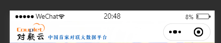
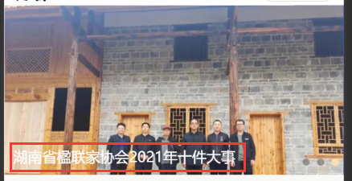

微信小程序
1、ios系统时间显示NAN
原因如下：
当进行网络请求的时候，后端返回日期格式为“2018-05-03”。iOS手机或者浏览器不支持这种类型的日期格式
解决：ios系统只支持解析以斜杠分隔的时间，所以需要用正则将时间格式转换一下
xxxxxxxxxx121// 在小程序的工具文件util.js中进行封装2function formatTime(date) {3 var time = date==null ? "" : Date.parse(date.replace(/-/g, '/')); // 时间戳4 var date = new Date(time);5 var year = date.getFullYear();6 var month = date.getMonth() + 1;7 var day = date.getDate();8 var hour = date.getHours();9 var minute = date.getMinutes();10 var second = date.getSeconds();11 return [year, month, day].map(formatNumber).join('/');12}
2、微信热启动/冷启动
热启动
热启动就是指关闭了小程序，或者按了home键，并且在一个时间范围内（一般为五分钟），再次打开小程序，就属于热启动。每次启动，app.js中onShow就会执行。
热启动的过程中（0-5min），小程序的数据（globalData）还是存在的。
但是热启动的方式有两种，一种是直接唤起，例如在最新使用的小程序中，点击刚才关闭的小程序，页面直接被唤起了，停留在你上一次使用的页面，包括滚动位置都是一样的，这种情况就会执行onShow，如果超过五分钟，就会重新加载，会加载到首页，执行onLoad方法。
还有一种是会跳转的，例如打开朋友分享的小程序，点到了另外的页面，然后关闭了，再次打开，会定位小程序的首页，之前打开的页面都会执行onUnload卸载掉，执行首页的onLoad方法。
热启动的过程中，onLuanch是不会执行的，所以onLuanch中最好只是设置一下GloablData。
冷启动
冷启动就是第一次进入小程序；或者时间很长，微信把小程序杀死了；或者小程序太占内存，被微信杀死了；或者手动杀死了微信进程，就会触发冷启动。每次触发冷启动，就会执行OnLuanch。
有一个问题，正常情况下，微信什么时候会杀死小程序进程？上面说一般为五分钟，但是并不代表，五分钟到了，就会杀死小程序，只是说五分钟到了，小程序的服务线程（小程序中有两个线程，视图线程，例如wxml，服务线程，例如js）被杀死，globalData没了。
现实情况是，微信可能很长一段时间都不会杀死小程序，也就是说，很长一段时间onLuanch都不会执行，因此会存在一段空档期（5-Xmin），在这段时间内，globalData没有了，也不会执行onLuanch。

如何安排？
globalData可以放在onLoad中执行
xxxxxxxxxx71onLoad(options) {2 if(!app.globalData.init){//防止重复初始化3 app.globalData.init=true;4 5 app.global.***=option.***;//接受参数6 }7}某些对象需要在初始化时（app.js）挂载，可以放在onShow中执行
xxxxxxxxxx51onShow(){2 if(!this.***){//没有挂载3 this.***=****;4 }5}一般登录逻辑可以放在onLuanch中执行
登陆一般涉及两个时效性，一个是setStorage，将数据放在本地存储中，时效一般比较长；第二个是we.login，他得到code，然后传给后端去换的openid等数据，session_key，session_key一般为三天，这两个时效性都比onluanch长，所以可以将登陆放在onLuanch中执行。
3、自定义导航栏
第一步、弃用默认的导航栏
json文件中设置
xxxxxxxxxx31"window": {2 "navigationStyle": "custom"3}第二步、根据胶囊的位置获取导航栏的高度
2.1 首先获取胶囊的信息
xxxxxxxxxx11const menuButtonInfo = wx.getMenuButtonBoundingClientRect();| width | height | top | right | bottom | left |
|---|---|---|---|---|---|
| 宽度 | 高度 | 上边界坐标 | 右边界坐标 | 下边界坐标 | 左边界坐标 |

2.2 获取系统信息
xxxxxxxxxx11const systemInfo = wx.getSystemInfoSync();根据这个获取statusBarHeight(状态栏高度)
2.3 计算高度
导航栏高度 = 状态栏到胶囊的间距（胶囊距上距离-状态栏高度） * 2 + 胶囊高度 + 状态栏高度
xxxxxxxxxx211App({2 onLaunch: function(options) {3 const that = this;4 // 获取系统信息5 const systemInfo = wx.getSystemInfoSync();6 // 胶囊按钮位置信息7 const menuButtonInfo = wx.getMenuButtonBoundingClientRect();8 // 导航栏高度 = 状态栏到胶囊的间距（胶囊距上距离-状态栏高度） * 2 + 胶囊高度 + 状态栏高度9 that.globalData.navBarHeight = (menuButtonInfo.top - systemInfo.statusBarHeight) * 2 + menuButtonInfo.height + systemInfo.statusBarHeight;10 that.globalData.menuRight = systemInfo.screenWidth - menuButtonInfo.right;11 that.globalData.menuBotton = menuButtonInfo.top - systemInfo.statusBarHeight;12 that.globalData.menuHeight = menuButtonInfo.height;13 },14 // 数据都是根据当前机型进行计算，这样的方式兼容大部分机器15 globalData: {16 navBarHeight: 0, // 导航栏高度17 menuRight: 0, // 胶囊距右方间距（方保持左、右间距一致）18 menuBotton: 0, // 胶囊距底部间距（保持底部间距一致）19 menuHeight: 0, // 胶囊高度（自定义内容可与胶囊高度保证一致）20 }21})2.4 自定义组件
xxxxxxxxxx131<!-- html -->2<!-- 自定义顶部栏 -->3<view class="nav_bar" style="height:{{navBarHeight}}px;">4 <!-- 导航栏背景图片 -->5 <image class="backgroundImg" style="margin-top: {{navStatusHeight}}px;" mode="widthFix" src="{{navBarImg}}"/>6</view>7
8<!-- 9 内容区域：10 自定义顶部栏用的fixed定位，会遮盖到下面内容，注意设置好间距11-->12<view class="content" style="margin-top:{{navBarHeight}}px;"></view>13
xxxxxxxxxx271// js2const app = getApp()3Component({4 // 子组件传递参数5 properties: {6 },7 // 组件自己的数据8 data: {9 navBarHeight: '',10 navStatusHeight: '',11 navBarImg: "../../icons/navImage.png",12 },13 // 子组件加载14 attached: function() {15 this.setData({16 navBarHeight: app.globalData.navBarHeight,17 navStatusHeight: app.globalData.navStatusHeight18 })19 },20 methods: {21
22 },23 // 使用全局样式，否则无法使用图标或者图片24 options: {25 addGlobalClass: true26 }27})xxxxxxxxxx141/* wxss */2.nav_bar {3 background-color: #fff;4 position: fixed;5 width: 100%;6 top: 0;7 left: 0;8 z-index: 99999;9}10.nav_bar .backgroundImg {11 position: fixed;12 height: 100%;13}14
第四步、使用自定义导航栏组件
1、在json文件中引入组件
xxxxxxxxxx11"NavBar": "../../components/NavBar/NavBar",2、在wxml中使用组件
xxxxxxxxxx21<!-- 自定义导航栏 -->2<NavBar></NavBar>
4、图片上叠加文字
使用relative和absolute定位
4.1 首先将图片和文字放在同一个父盒子下
xxxxxxxxxx61<navigator url="/pages/news_about/news_detail/index?newsId={{item.newsId}}" hover-class="none">2 <image mode="widthFix" src="{{item.newsImage}}"></image>3 <view class="news_info">4 {{item.newsTitle}}5 </view>6</navigator>4.2 将父盒子设置为relative定位
xxxxxxxxxx61navigator{2 position: relative;3 height: 375rpx;4 width: 100%;5 padding: 0;6}4.3 将文字设置为absolute定位，相对父盒子定位
xxxxxxxxxx191image{2 width: 100%;3 height: 375rpx;4} 5.news_info{6 position: absolute;7 left: 20rpx;8 bottom: 20rpx;9 width: 80%;10 color: #ffffff;11 // overflow: hidden;12 // white-space: nowrap;13 // text-overflow: ellipsis;14 display: -webkit-box;15 overflow: hidden;16 text-overflow: ellipsis;17 -webkit-box-orient: vertical;18 -webkit-line-clamp: 2;19} 4.4 结果

5、设置轮播图指示点位置
xxxxxxxxxx61/*指示点位置*/2.wx-swiper-dots{3 position:relative;4 left: unset!important;5 right: -30rpx;6}6、获取元素高度
最好在onReady中调用，在页面渲染完成的回调函数中处理高度问题
xxxxxxxxxx361// 计算的时候，不能有没有确定宽高的图标或者图片2// 并且需要设置延时，如果不加定时器，获取的元素的高度还是没渲染完异步数据前的高度3setTimeout(() => {4 // 首先创建一个元素选择对象5 const query = wx.createSelectorQuery();6 // 根据类选择器或者id选择器选择元素7 query.selectAll('.minusView').boundingClientRect();8 // 对元素进行处理9 query.exec((res) => {10 this.setData({11 // 实时获取窗口高度12 scrollHeight: (wx.getSystemInfoSync().windowHeight - res[0][0].height - res[0][1].height - res[0][2].height)13 });14 });15 query.selectAll('#introductionId').boundingClientRect();16 query.exec((res) => {17 // 选择器获取到的单位是Px，需要适应不同的手机型号，所以将需要根据rpx去比例计算得到px18 if(res[0][0].height > getPx(120)) {19 this.setData({20 showMore: true21 });22 } else {23 this.setData({24 showMore: false25 });26 }27 })28}, 500);29
30// 获取单位转换结果,由rpx转换为该手机下的px31const getPx = rpx => {32 const width = wx.getSystemInfoSync().windowWidth;33 const rate = width / 750.0;34 // console.log(rpx * rate);35 return rpx * rate;36}7、获取页面栈
微信小程序支持最多十个页面栈
xxxxxxxxxx121// 页面栈2let pages = getCurrentPages();3// 上一个页面4let prevPage = pages[pages.length - 2];5if ( prevPage.route === 'pages/my_about/modify_information/index' && pages.length !== this.pageNumber) {6 // 如果是从修改页面跳转过来的，就需要刷新数据7 // 只有从修改页面跳转回来，length才会改变，8 this.pageNumber = pages.length;9 this.getMyInfo();10 } else {11 // 否则不需要刷新数据，说明还是上次修改12}